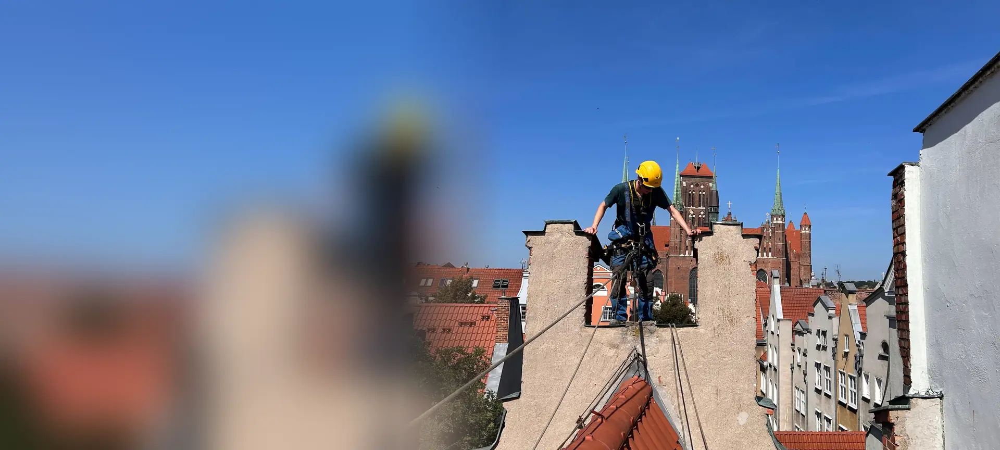
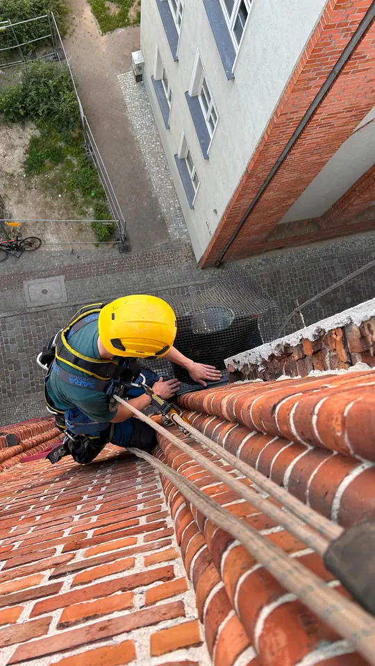
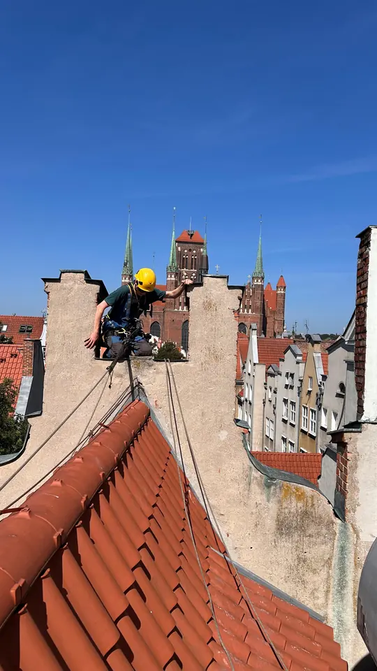
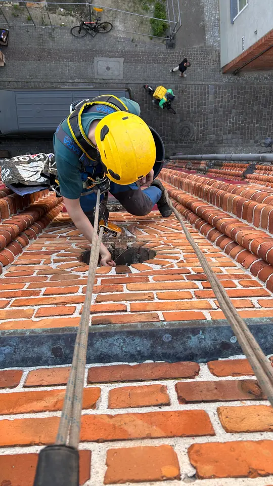

Kamienice i zabytki
Prace alpinistyczne na dachach i szczytach kamienic w Śródmieściu i Wrzeszczu.
- naprawy i uszczelnianie dachów
- kominy i obróbki blacharskie
- rynny i odpływy
- zabezpieczenia przed ptakami

Usługi alpinistyczne i prace na wysokościach w Gdańsku: od kamienic Głównego Miasta, przez biurowce Oliwy i Przymorza, po osiedla i hale. Obsługujemy zarządców nieruchomości, wspólnoty, deweloperów i firmy. Pracujemy na linach, bez rusztowań.
Gdańsk to wąskie uliczki, zabytkowe kamienice, wysokie biurowce i długie bloki. Dostęp linowy rozwiązuje problemy, z którymi rusztowanie i podnośnik sobie nie radzą.
Najczęstsze usługi wysokościowe, które wykonujemy dla gdańskich zarządców, wspólnot i firm.
Prace alpinistyczne na dachach i szczytach kamienic w Śródmieściu i Wrzeszczu.
Usługi wysokościowe dla budynków komercyjnych w Oliwie, na Przymorzu i w Letnicy.
Stała obsługa bloków i osiedli na Zaspie, Przymorzu, Chełmie i Ujeścisku.
Obiekty przemysłowe, magazyny i hale w rejonie portu i obwodnicy.
Obsługujemy cały Gdańsk. Poniżej dzielnice, w których najczęściej wykonujemy prace wysokościowe.
Główne Miasto, Stare Miasto i Dolne Miasto: dachy, szczyty i kominy zabytkowych kamienic, prace w ciasnej zabudowie.
Główne Miasto · Stare Miasto · Dolne Miasto · Wyspa Spichrzów
Kamienice Wrzeszcza, biurowce i budynki usługowe wzdłuż Grunwaldzkiej: mycie fasad, konserwacja elewacji, montaże.
Wrzeszcz · Oliwa · Strzyża · Brętowo
Wysokie bloki i długie budynki wspólnot: naprawy dachów, uszczelnianie, przeglądy i mycie okien na wysokości.
Przymorze · Zaspa · Żabianka · Letnica · Brzeźno
Południe Gdańska i okolice: Chełm, Orunia, Ujeścisko, Jasień, Kokoszki oraz Pruszcz Gdański. Dojeżdżamy do każdej dzielnicy.



Na kamienicach Głównego Miasta pracujemy z dachu, na dwóch niezależnych linach, z wydzieloną strefą na dole. Po zakończeniu zarządca dostaje protokół ze zdjęciami przed i po oraz fakturę VAT.
Nasza baza jest w Gdyni, więc do Gdańska dojeżdżamy w około 30–40 minut. Wycenę na podstawie zdjęć przygotowujemy zwykle tego samego dnia roboczego, a prace możemy rozpocząć w ciągu 24–48 godzin.
Tak. Pracowaliśmy na dachach i szczytach kamienic na Głównym Mieście. Dostęp linowy nie wymaga rusztowania w wąskich uliczkach i nie obciąża zabytkowej elewacji.
Alpinista na linach dociera tam, gdzie podnośnik nie wjedzie lub nie sięgnie: na wewnętrzne podwórza, strome dachy, wysokie elewacje i miejsca nad wejściami. Nie blokujemy ulicy, a budynek działa normalnie.
Przy pracach na linach zwykle nie, bo nie stawiamy rusztowania. Pod miejscem pracy wydzielamy i oznaczamy strefę bezpieczeństwa. Jeśli zlecenie wymaga zajęcia chodnika, informujemy o tym zarządcę przed startem.
Tak. Prowadzimy stałą obsługę budynków na podstawie umowy serwisowej: przeglądy dachów, cykliczne mycie elewacji i przeszkleń oraz szybkie interwencje. Po każdej pracy dostajesz protokół ze zdjęciami.
Naprawy dachów i kominów kamienic, mycie elewacji i przeszkleń biurowców, uszczelnianie obróbek blacharskich, montaż napisów i siatek przeciw ptakom oraz zimą odśnieżanie dachów i usuwanie sopli.
Wyślij zdjęcia i adres obiektu. Przygotujemy bezpłatną wycenę, zwykle tego samego dnia roboczego.